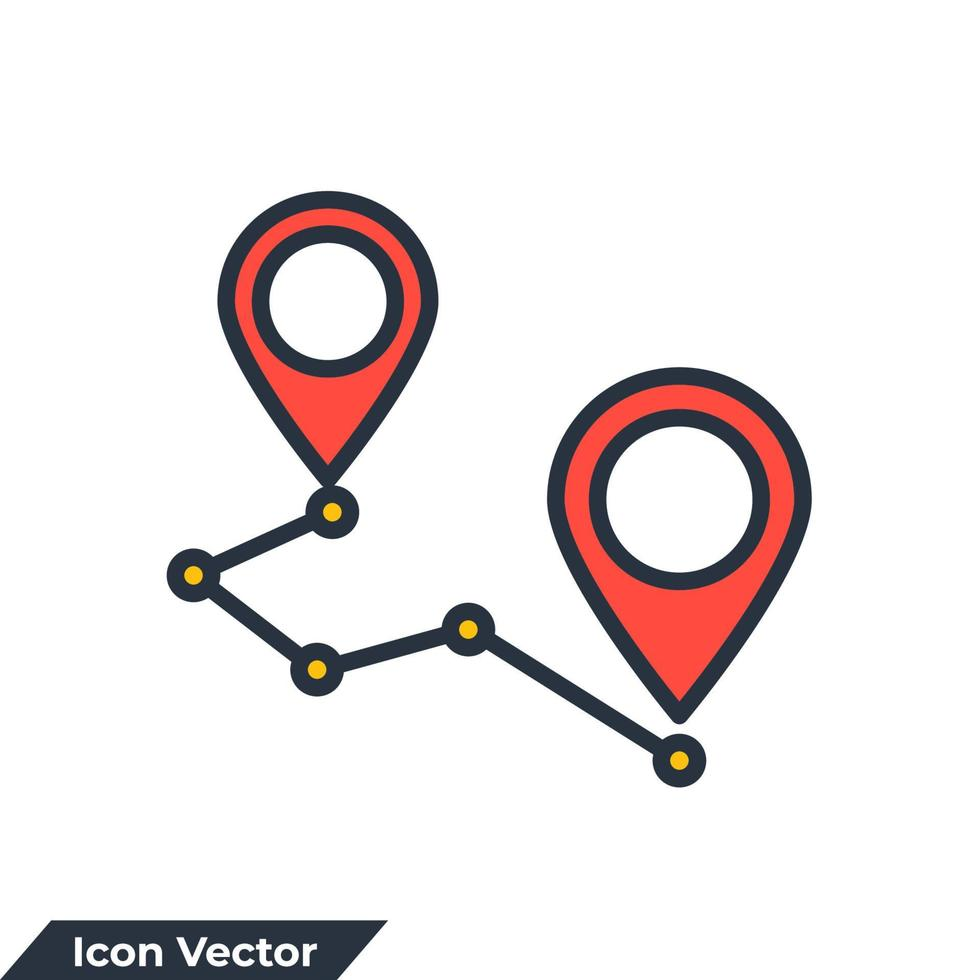
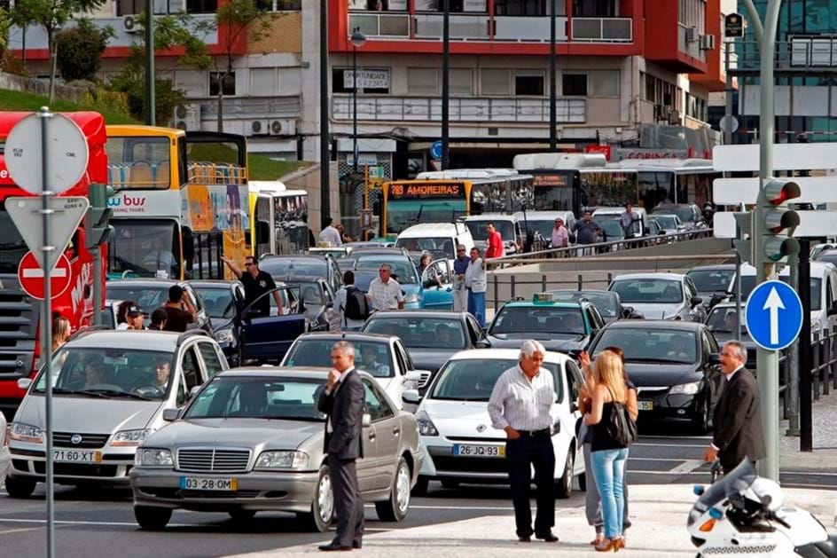
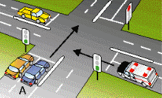

Desenvolvimento: GPS
O primeiro componente do sistema é o GPS, que estará no veículo de emergência, com o papel de se localizar e comunicar com o sistema.
Ler maisTestemunho 3: Ajuda de ex-vereador
Os problemas da infraestrutura existente são por muitas vezes evidentes a todos, mas raramente as causas são tão óbvias. Com a ajuda de um ex-vereador da Câmara de Lisboa, foi nos posto em causa as falhas de sistemas anteriores. Os semáforos ajudam, mas o problema é sempre os carros no caminho.
Ler maisTestemunho 2: O Olhar de um Ex-Condutor de Ambulância
Quem já passou anos ao volante de uma ambulância conhece bem as dificuldades que os socorristas enfrentam. Durante a nossa entrevista, ouvimos histórias de situações em que o trânsito e a falta de prioridade nos semáforos tornaram o socorro ainda mais difícil.
Ler maisTestemunho 1: A Perspectiva de um Condutor de Ambulância em Atividade
A estrada nunca é previsível. No dia a dia de um condutor de ambulância, cada deslocação é uma corrida contra o tempo. Entre cruzamentos caóticos, semáforos que não mudam e condutores que hesitam, cada segundo perdido pode ser a diferença entre salvar uma vida ou chegar tarde demais.
Ler maisO Impacto da Sincronização de Semáforos

Para entender melhor o impacto real que nosso sistema poderia ter, entrevistamos António Santos, ex-condutor de ambulâncias com 15 anos de experiência em serviços de emergência em Lisboa. A conversa revelou desafios críticos enfrentados pelos veículos de emergência no dia a dia.
Ler maisApresentação do Projeto: Green Wave for Emergency Vehicles

Bem-vindo(a) à primeira entrada de blog do nosso projeto Green Wave for Emergency Vehicles. O objetivo principal desta iniciativa é reduzir o tempo de resposta em emergências, através de um sistema inteligente que coordene semáforos para criar uma "onda verde" específica para veículos de emergência.
Ler mais